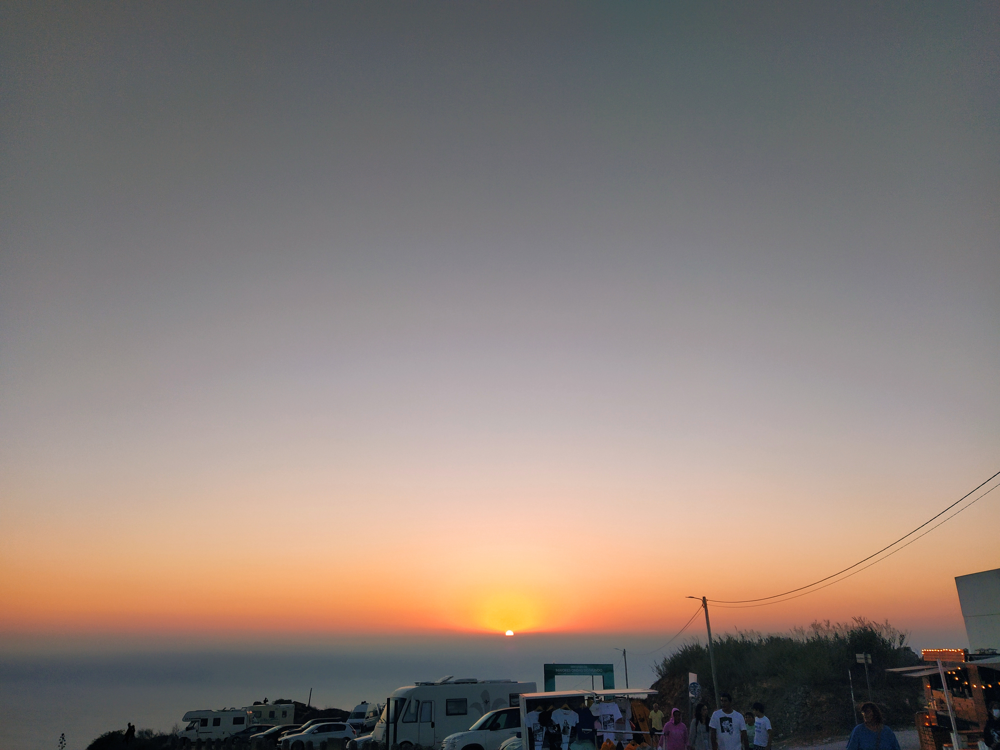
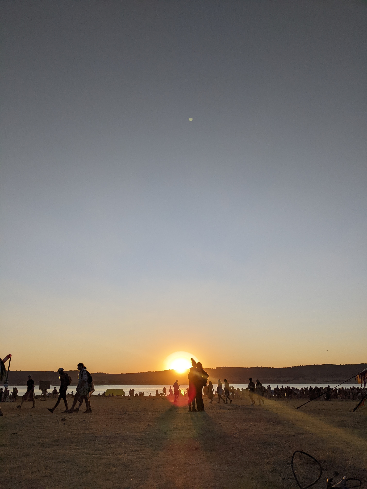

I am deeply obsessed with the sun. Paraphrasing Carl Sagan: we are nothing but star-stuff. Not only are we composed from its nebular matter, the sun is also the root source of energy around us. It even regulates the internal circadian rhythm of our form of consciousness. The sun is absolutely everything as far as we are concerned. But slowly and quietly the sun will engulf us and fade away. What the fuck?! Here are some of my favorite sunsets.